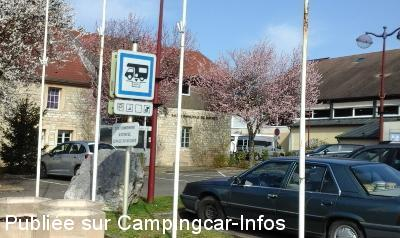
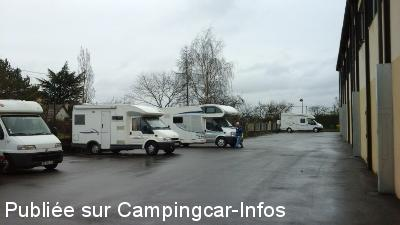
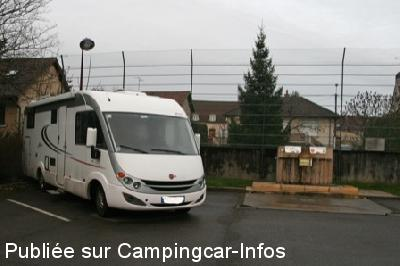
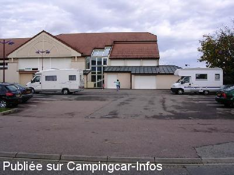
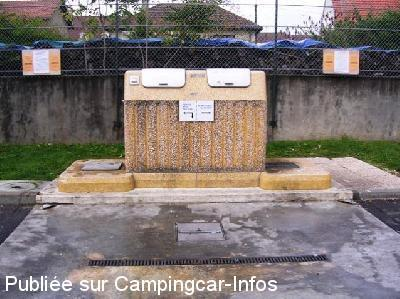
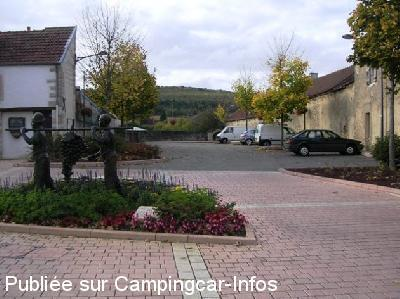

ASN = Aire de services avec stationnement nuit possible de :
MARSANNAY LA CÔTE
(N° 645)
Accès/adresse :
Rue du Rocher
21160 MARSANNAY LA CÔTE
21160 MARSANNAY LA CÔTE
Latitude : (Nord) 47.27099° Décimaux ou 47° 16′ 15′′
Longitude : (Est) 4.9923° Décimaux ou 4° 59′ 32′′
Tarif : Gratuit
Type de borne : Artisanale
Services :


Autres informations :
Borne de services non accessible en période hivernale.

Le 29/03/2015 par Nicole et Guy

Le 29/03/2015 par Nicole et Guy

Le 27/01/2014 par famiski

Le 02/11/2005 par gilles

Le 02/11/2005 par gilles

Le 02/11/2005 par gilles
de
carboig
le 20/08/2015 :
aire juste correcte 1 nuit passée calme, mais non respectée par les voitures
aire juste correcte 1 nuit passée calme, mais non respectée par les voitures
de
Nicole et Guy
le 29/03/2015 :
Comme en témoigne le panneau à l'entrée de "l'espace du rocher" le stationnement y est autorisé. Cette aire mériterait donc de passer dans la catégorie ASN. Ayant pu aller à l'arrière du gymnase, j'y ai passé 2 nuits très au calme avec plusieurs spots Wifi disponibles (merci aux voisins). par contre l'autre aire (de l'office du tourisme )est maintenant interdite.
Comme en témoigne le panneau à l'entrée de "l'espace du rocher" le stationnement y est autorisé. Cette aire mériterait donc de passer dans la catégorie ASN. Ayant pu aller à l'arrière du gymnase, j'y ai passé 2 nuits très au calme avec plusieurs spots Wifi disponibles (merci aux voisins). par contre l'autre aire (de l'office du tourisme )est maintenant interdite.
de
Maumo62126
le 04/12/2014 :
Aire pratique avec les services eaux - eaux usées - wc proche d'un arrêt de bus qui vous amène à la correspondance tram pour le centre de Dijon, temps environ 30mn bravo à la municipalité de cette commune
Aire pratique avec les services eaux - eaux usées - wc proche d'un arrêt de bus qui vous amène à la correspondance tram pour le centre de Dijon, temps environ 30mn bravo à la municipalité de cette commune
de
famiski
le 27/01/2014 :
§ De passage le 25 janvier, le parking n'y est plus autorisé.
Mais la borne est toujours là . Arrivés très tard, nous n'avons pas regardé si ils proposent une alternative à ce parking ... Nous y sommes restés pour la nuit malgré tout ... un match de basket se déroulait dans la salle du parking et des jeunes ont cassé des lampes après le match, nous avons failli partir...pas très à l'aise face à ces débordements ...
§ De passage le 25 janvier, le parking n'y est plus autorisé.
Mais la borne est toujours là . Arrivés très tard, nous n'avons pas regardé si ils proposent une alternative à ce parking ... Nous y sommes restés pour la nuit malgré tout ... un match de basket se déroulait dans la salle du parking et des jeunes ont cassé des lampes après le match, nous avons failli partir...pas très à l'aise face à ces débordements ...
de
DENIS
le 27/02/2012 :
De passage en fevrier 2012, presence de travaux sur la petite place le long de la rue, l'aire se trouve au fond a gauche.
Nuit trés calme.
De passage en fevrier 2012, presence de travaux sur la petite place le long de la rue, l'aire se trouve au fond a gauche.
Nuit trés calme.
de
Jean-Louis & Anne-Marie de Bordeaux
le 16/05/2009 :
Aire vraiment très bien, bon accueil et excellent vin de Marsannay à boire avec modération ! Prendre la route des chateaux Marsannay Beaune, très, très beau paysage.
Aire vraiment très bien, bon accueil et excellent vin de Marsannay à boire avec modération ! Prendre la route des chateaux Marsannay Beaune, très, très beau paysage.
de
pataille
le 11/03/2009 :
Que du bonheur: aire facilement utilisable, pas d'eau l'hiver mais vidanges possibles. Nuit très calme passée sur le parking de la mairie à côté du syndicat d'initiative. Merci à la commune pour cet accueil.
Que du bonheur: aire facilement utilisable, pas d'eau l'hiver mais vidanges possibles. Nuit très calme passée sur le parking de la mairie à côté du syndicat d'initiative. Merci à la commune pour cet accueil.
de
michel
le 17/12/2008 :
Avons passé 2 nuits sur cette aire très calme. Seul point noir en hors gel. L'électricité ne fonctionne pas en décembre, c'est pratique pour recharger la batterie. Nous avons utilisé le bus pour rejoindre
Dijon, très pratique. Les gens de Marsannay sont très gentils, nous reviendrons en passant dans cette région.
Avons passé 2 nuits sur cette aire très calme. Seul point noir en hors gel. L'électricité ne fonctionne pas en décembre, c'est pratique pour recharger la batterie. Nous avons utilisé le bus pour rejoindre
Dijon, très pratique. Les gens de Marsannay sont très gentils, nous reviendrons en passant dans cette région.
de
Michael Balzer
le 27/04/2008 :
Gute Übernachtungsmöglichkeit auf dem Weg in den Süden. Liegt relativ zentral (Einkauf/Tanken), aber
dennoch absolut ruhig.
Kompliment und danke nach Marsannay !
Grüße aus "Allemagne" !
Michi
Gute Übernachtungsmöglichkeit auf dem Weg in den Süden. Liegt relativ zentral (Einkauf/Tanken), aber
dennoch absolut ruhig.
Kompliment und danke nach Marsannay !
Grüße aus "Allemagne" !
Michi
de
nenettemamita
le 06/11/2007 :
Aire gratuite (tous services sauf EDF) et agréable, très facile d'accès et bien indiquée ; nous y avons passé une nuit calme et sympa après une soirée avec concert d'orgue de barbarie et chants d'autres camping-caristes. Grand parking près de la salle omnisport bien aménagée. Commerces à proximité petites caves sympas, nous y retournerons.
Aire gratuite (tous services sauf EDF) et agréable, très facile d'accès et bien indiquée ; nous y avons passé une nuit calme et sympa après une soirée avec concert d'orgue de barbarie et chants d'autres camping-caristes. Grand parking près de la salle omnisport bien aménagée. Commerces à proximité petites caves sympas, nous y retournerons.
de
tricmuche
le 02/11/2007 :
Nous avons dormi sur le parking jouxtant l'aire de services, nuit calme. L'affiche stipule qu'il est préférable d'utiliser le parking proche de l'office du tourisme (dernière photo de Gilles) car la salle donnant sur le parking de l'aire de services peut être utilisée la nuit. Commune à féliciter pour son accueil des CC. Nota: aire bien signalée.
Nous avons dormi sur le parking jouxtant l'aire de services, nuit calme. L'affiche stipule qu'il est préférable d'utiliser le parking proche de l'office du tourisme (dernière photo de Gilles) car la salle donnant sur le parking de l'aire de services peut être utilisée la nuit. Commune à féliciter pour son accueil des CC. Nota: aire bien signalée.
de
nicole
le 22/04/2006 :
Cette aire est à la porte de Dijon, idéalement bien conçue, toujours opérationnelle, totalement gratuite; la signalétique pourrait être améliorée pour les gens de passage dans la région.
Cette aire est à la porte de Dijon, idéalement bien conçue, toujours opérationnelle, totalement gratuite; la signalétique pourrait être améliorée pour les gens de passage dans la région.